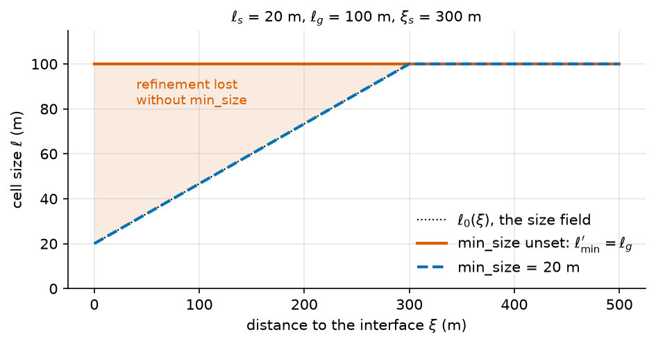
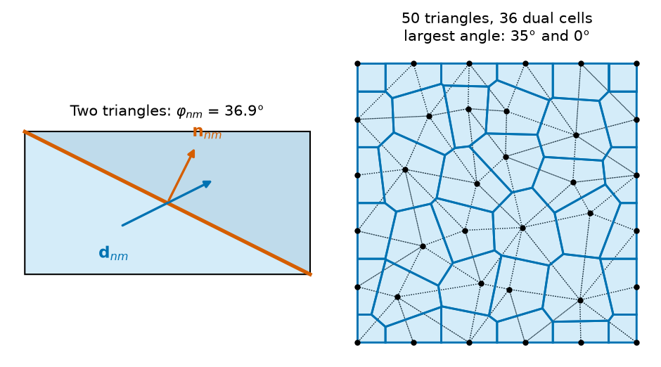
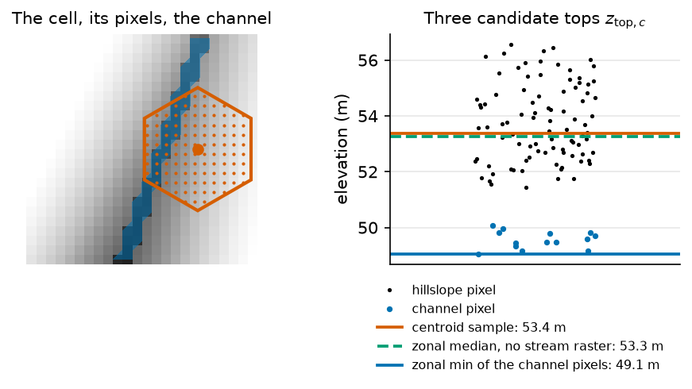
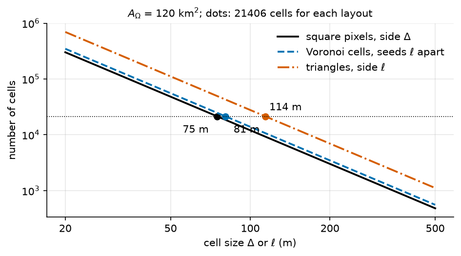

The mesh#
The solver does not see the DEM. It sees cells, and one top elevation, one bottom elevation and one centre for each of them. This page gives the rules that turn the DEM into those cells: how the cells are laid out, how the top of a cell is read from the DEM, how many cells a given size costs, and which checks the code runs on the result.
Note
Scope. The cell layout below is the one of MODFLOW 6, which reads every grid as a DISV grid. MODFLOW-NWT builds a structured grid only and ignores a runtime mesh. Boussinesq uses the triangles of the Gmsh mesh as its cells, so the Voronoi dual of 3. The Voronoi dual does not apply to it, and it ignores the top sampling of 5. The top of a cell. What the solver does with the cells is on The solvers of the aquifer. The extra terms XT3D adds on a non-orthogonal mesh are on XT3D on irregular meshes. To set up a mesh, see [mesh_catchment].
The chain in one list#
The code builds the cells in this order. Each step is a section below.
Two surfaces: the top from the DEM \(Z\) and the bottom from the depth model.
A planar support, from one of two sources: the pixels of the DEM (a structured grid, 1. A structured grid), or a Gmsh triangulation built at run time (2. A runtime mesh from Gmsh), which MODFLOW 6 turns into its Voronoi dual by default (3. The Voronoi dual).
One top elevation per cell (5. The top of a cell) and one bottom elevation per cell.
A check of the thickness (8. The checks the code applies), then the layers (6. Thickness and layers).
The export to MODFLOW 6 as a DISV grid. The cells that have no valid top or bottom are written inactive.
Example 04 uses the first source: its files declare neither a [mesh_catchment] section
nor a [modflow6.sgrid] section, so every cell is one DEM pixel. The header of
step1_minimal.toml counts 21406 cells of 75 m for this domain.
Notation of this page
Symbol |
Meaning |
Unit |
Set by |
|---|---|---|---|
\(n, m\) |
cell indices; \(\mathcal{N}(n)\) is the set of cells that share a face with \(n\) |
the grid, The mesh |
|
\(a_n\) |
plan area of cell \(n\) |
m² |
the grid |
\(G_{nm}\) |
conductance between cells \(n\) and \(m\) |
m²/s |
derived from \(K\), the geometry and the heads |
\(\Omega\) |
the meshed domain |
the catchment, its buffer and |
|
\(A_\Omega\) |
area of the meshed domain |
m² |
derived |
\(Z\) |
the DEM, one value \(Z_p\) per pixel \(p\) |
m |
|
\(\Delta\) |
side of a DEM pixel |
m |
the DEM |
\(N_S, N_T, N_V\) |
number of cells of a structured grid, of a triangle mesh, of its Voronoi dual |
derived |
|
\(n_v, n_b\) |
number of vertices of the triangulation, and of those on its outline |
derived |
|
\(\ell_g\) |
background cell size |
m |
|
\(\ell_s\) |
cell size on an interface |
m |
|
\(\xi_s\) |
distance over which the size grows back to \(\ell_g\) |
m |
|
\(\xi\) |
distance from a point to the nearest interface |
m |
derived |
\(\ell_{\min}, \ell_{\max}\) |
lower and upper bound of the size |
m |
|
\(\mathbf{s}_i\) |
seed of Voronoi cell \(i\), a vertex of the triangulation |
m |
derived |
\(\mathbf{d}_{nm}\) |
vector from the centre of \(n\) to the centre of \(m\) |
m |
the grid |
\(\mathbf{n}_{nm}\) |
unit normal of the face shared by \(n\) and \(m\) |
the grid |
|
\(\varphi_{nm}\) |
non-orthogonality of a connection, the angle between \(\mathbf{d}_{nm}\) and \(\mathbf{n}_{nm}\) |
degree |
derived |
\(P_c, P_c^{\mathrm{ch}}\) |
DEM pixels whose centre falls in cell \(c\), and those of them on a channel |
derived |
|
\(n_{\min}\) |
pixels a cell needs for a hillslope statistic |
||
\(\varepsilon_z\) |
spike tolerance of the zonal top |
m |
|
\(b_{\min}\) |
smallest thickness kept under a zonal top |
m |
|
\(z_{\mathrm{top},c}, z_{\mathrm{bot},c}\) |
top and bottom of cell \(c\) |
m |
derived |
\(\tilde z_c\) |
DEM value interpolated at the centre of cell \(c\) |
m |
derived |
1. A structured grid#
With modflow6.sgrid.planar.mode at its default, the cells are the pixels of the
top raster, with the same size and the same extent. A cell \((i,j)\) takes the value of
pixel \((i,j)\), with no interpolation:
A pixel that is nodata makes the cell inactive. The cell still exists in the grid, so \(N_S\) counts the active and the inactive cells.
With modflow6.sgrid.planar.mode set to resample the grid to a shape, top and
bottom are resampled to \(n_{\mathrm{row}} \times n_{\mathrm{col}}\) cells over the same
extent, with the rule of modflow6.sgrid.planar.resampling
(project_surfaces_to_planar_grid). If a cell then covers at least two DEM pixels, the
top of the cell is the zonal statistic of 5. The top of a cell instead of the
resampled value (_cells_cover_pixels, _zonal_structured_top). A grid whose cells are
the pixels is never touched by the zonal top.
MODFLOW 6 reads this grid as a DISV grid. MODFLOW-NWT reads it as a DIS grid.
2. A runtime mesh from Gmsh#
A [mesh_catchment] section makes the run build a triangulation of \(\Omega\) with Gmsh
before the solver is prepared (run_mesh_phase). The project refuses a file that has both a
[mesh_catchment] and a [mesh_input] section (Embedded [mesh_catchment] and external [mesh_input] are mutually):
they are two sources for the same mesh. A mesh that already exists is declared with
mesh_input.mesh_path or mesh_input.bundle_dir instead, and goes through
the steps below like a mesh the run built.
The triangle sizes come from a size field, in the sense of the Gmsh manual
([Geuzaine and Remacle, 2009], reference manual):
a Distance field to some curves, a Threshold field on it, and the minimum of all fields.
Around the interface curves (rivers, geology interfaces, the catchment boundary), when
mesh_catchment.zone_meshing.refine_interfaces is on, the code sets the lower
distance of the Threshold to zero. With \(\xi\) the distance to the nearest interface, the
wanted size is linear between the two limits:
When the refinement policy is on, there is one such field per family of curves, with its
own \(\ell_s\) and \(\xi_s\) (apply_family_refinement_fields). The size actually used is
bounded by Gmsh options the code sets from the three keys of the section
(apply_mesh_options):
The fields of the lakes, of the refinement zones and of the coarsening outside the
catchment join the interface fields (set_background_mesh_from_fields). The upper bound is
raised to the largest size of such a regional field when the section declares one
(compute_effective_max_size). The lower bound has a consequence that the keys do not
announce: with no
mesh_catchment.zone_meshing.min_size, \(\ell_{\min}' = \ell_g\), and every size
below \(\ell_g\) is raised back to \(\ell_g\). An interface_size\
below the background size then changes nothing (Limits).

Fig. 29 The size of (21) (dotted) and the size Gmsh keeps under the
bounds that apply_mesh_options sets, for \(\ell_s = 20\) m,
\(\ell_g = 100\) m and \(\xi_s = 300\) m. Look at the shaded band: without
min_size the refinement near the interface is lost.#
The 2D algorithm is the one named by mesh_catchment.zone_meshing.algorithm. The
code knows four names and maps them to the Gmsh codes. Gmsh does not give the same
triangulation twice for the same input. mesh_catchment.cache keeps the first one
and reuses it while the inputs that shape the mesh are unchanged.
3. The Voronoi dual#
MODFLOW 6 does not take the triangles as cells by default. With
modflow6.sgrid.grid_dual at its default, the code takes the vertices of the
triangulation as seeds \(\mathbf{s}_i\) and builds the Voronoi (PEBI) cell of each seed,
that is the set of points closer to it than to any other seed, clipped to the outline
\(\Omega\) of the triangulation.
The cell centre written to the DISV file is the seed itself. Three rules complete the construction:
A seed whose cell falls entirely outside \(\Omega\) is dropped.
When the clip splits a cell, the piece that contains the seed is kept.
If no piece contains the seed, the largest piece is kept and its representative point becomes the centre.
The outline \(\Omega\) is rebuilt from the edges that belong to exactly one triangle. The coordinates of the vertices are rounded to 1 mm so that the corners shared by two cells are one vertex, which assumes a projected CRS in metres.
Three consequences follow.
The number of cells. The dual has one cell per seed, so \(N_V = n_v\), the number of vertices. By Euler’s formula a triangulation of a region without holes has \(N_T = 2 n_v - n_b - 2\) triangles, \(n_b\) being the vertices on its outline, so \(N_V \approx N_T / 2\) when \(n_b\) is small against \(n_v\).
The faces. The face between two cells is the perpendicular bisector of the segment between their seeds. The faces are not the edges of the triangulation. A river that was a chain of triangle edges runs through the middle of a chain of Voronoi cells: it is no longer the boundary of any cell.
The orthogonality. The line between the two centres is perpendicular to the face, so
\(\varphi_{nm} = 0\) on every connection whose two cells kept their seed as centre.
4. Flow between two cells, and the angle says why this matters. As a check, 36 seeds on a \(6 \times 6\) lattice
(the 16 inner ones moved at random, \(n_b = 20\)) give 50 triangles, and
voronoi_dual_of_mesh returns 36 cells with \(0^\circ\) on every connection.
The features. Wells and boundaries are placed on the dual cells, not on the triangles. A well goes in the cell that holds its point. A side boundary takes the cells whose seed lies on that side, so the head is held on the boundary and not in a clipped inner cell that only touches it; a corner cell belongs to both sides. A side with no seed on it falls back to the cells with a face on it, with a warning. The stream boundary takes the cells the river runs through.
With modflow6.sgrid.grid_dual set to "triangle", the triangles are the cells
and the centre of a cell is the mean of its three vertices.
4. Flow between two cells, and the angle#
MODFLOW 6 writes the flow between two cells with the two-point finite-difference term \(G_{nm}\,(h_m - h_n)\) of (17) [Harbaugh, 2005, Langevin et al., 2017]. It is exact only when the conductivity is isotropic in the plane and the line between the centres is perpendicular to the shared face. HydroModPy measures the departure from that condition on every connection, as an angle. With \(\mathbf{d}_{nm}\) the vector between the two centres and \(\mathbf{n}_{nm}\) the unit normal of the shared edge:
Only an edge shared by exactly two cells counts as a connection. The summary the code keeps is the median, the 95th and 99th percentiles, the maximum and the share of connections above 30 degrees. What the angle does to the flux, and when the code turns on the XT3D option that corrects it, is on XT3D on irregular meshes.
Two triangles. Cut a \(2 \times 1\) rectangle along its diagonal. The shared edge goes from \((2,0)\) to \((0,1)\), with a normal along \((1,2)\). The centres are the vertex means, \((2/3, 1/3)\) and \((4/3, 2/3)\), so \(\mathbf{d} = (2/3, 1/3)\) and
The same corners, as seeds. The four corners of the rectangle, taken as seeds, give
four cells of \(1 \times 0.5\) with four connections, all at \(0^\circ\). Both results were
checked with connection_nonorthogonality_deg, and the four cells with
voronoi_planar_mesh.

Fig. 31 Left: the two triangles above, with \(\mathbf{d}_{nm}\) between the
centres and \(\mathbf{n}_{nm}\) normal to the shared face; the angle comes from
connection_nonorthogonality_deg. Right: the 36 seeds of the check of
3. The Voronoi dual, their 50 triangles (dotted) and the 36 cells of
voronoi_dual_of_mesh (blue). Look at the title: the triangles reach 35°, every
connection of the dual is at 0°.#
5. The top of a cell#
The top of a cell is one number, read from the DEM \(Z\). Two rules exist, set by
modflow6.sgrid.top_sampling.mode. The bottom is always read by the first rule.
Centroid#
The DEM is sampled at the centre of the cell with a bilinear interpolation between the four pixel centres around it. The weights \(w_k\) are the bilinear ones, and a nodata pixel gets a weight of zero before the sum is normalised:
The result is undefined, and the cell inactive, when the centre is outside the raster or the four pixels are nodata. On an incised channel the centre of a cell often falls on a bank, not on the thalweg, and the cell is then too high.
Zonal#
The zonal rule reduces every pixel whose centre falls in the cell. A pixel belongs to the cell that contains
its centre: for a mesh, the code burns each cell polygon into a raster of the DEM; for a
structured grid, it computes the row and column by arithmetic. A pixel is channel when the stream raster of the
delineation says so, with the mask widened by
modflow6.sgrid.top_sampling.channel_buffer_px pixels. The raster is read only when
modflow6.sgrid.top_sampling.channel_source asks for it.
Without a stream raster, every pixel is a hillslope pixel.
With \(\operatorname{stat}\) the statistic named by
modflow6.sgrid.top_sampling.channel_stat on the channel pixels, and by
modflow6.sgrid.top_sampling.hillslope_stat on the others (mean, median,
min, max, and the 10th and 25th percentiles):
A channel cell needs one channel pixel. A hillslope cell needs \(n_{\min}\) pixels, and a cell finer than the DEM falls back to the centroid value. Two corrections follow, in this order:
The first one guards against a nodata edge: channel cells are exempt, since they are lowered on purpose. It is off when \(\varepsilon_z = 0\). The second one keeps a lowered top above the bottom. Only the top is zonal; the bottom keeps its centroid value, so a lowered top thins every layer of that column. The code logs, once per build, how many cells took a zonal value, how many are channel cells, and how far the tops were lowered.

Fig. 33 A cell of 32 m radius over a DEM of 5 m pixels, its centre on a bank 18 m from
a channel incised 2 m (blue). Right: the elevation of each pixel inside the cell,
and the top three rules give, from zonal_top with channel_stat = "min" and
hillslope_stat = "median". Look at the gap: the centroid sample and the
hillslope median sit on the bank, about 4 m above the channel minimum the cell
takes when the stream raster is read.#
The zonal rule falls back to the centroid value, with a message in the log, in three
cases: a surface with no georeferencing (Zonal top sampling needs a georeferenced surface; using centroid sample.),
a channel source with no stream raster (Zonal channel_source=%s but no stream raster found;
the channel class is then off), and a structured grid whose cells cover fewer than two DEM
pixels (Zonal top sampling skipped: a grid cell). In the code: zonal_top.
6. Thickness and layers#
The column of each cell is cut into layers by shares of its thickness, the same shares in
every cell, set by modflow6.sgrid.vertical.genmtd_lay. The rule,
(14), and its three strategies are on The solver grid and its layers.
Every layer shares the cells of the plan: the mesh is a vertical extrusion. A cell is inactive in every layer when its top or its bottom is nodata, not finite, or at or below the nodata value.
7. How many cells a size costs#
The cost of a run grows with the number of cells, so a structured grid and a mesh are compared at equal cell count. The ideal count below assumes cells of one uniform size over an area \(A_\Omega\).
For a structured grid of pixel side \(\Delta\):
For a triangulation of equilateral triangles of side \(\ell\), the triangle area is \(\frac{\sqrt3}{4}\ell^2\). The Voronoi cells are hexagons, whose area is \(\frac{\sqrt3}{2}\ell^2\) when two neighbouring seeds are \(\ell\) apart:
Equal counts then give the edge length that costs the same as a grid of side \(\Delta\):
Cells |
Count for an area \(A_\Omega\) |
Edge length at the cost of the grid of side \(\Delta\) |
|---|---|---|
Square pixels |
\(A_\Omega/\Delta^2\) |
\(\Delta\) |
Voronoi cells |
\(\approx 1.15\,A_\Omega/\ell^2\) |
\(\ell = \Delta \sqrt{2/\sqrt3} \approx 1.07\,\Delta\) |
Triangles |
\(\approx 2.31\,A_\Omega/\ell^2\) |
\(\ell = \Delta \sqrt{4/\sqrt3} \approx 1.52\,\Delta\) |
Worked example. The 21406 cells of 75 m of the header of step1_minimal.toml (the file does not say if
the count includes the inactive cells) cover
\(21406 \times 75^2\ \mathrm{m^2} \approx 120\ \mathrm{km^2}\). The same count on a
Voronoi mesh means seeds about \(81\ \mathrm{m}\) apart; on a triangle mesh, triangles of
about \(114\ \mathrm{m}\) side. These are ideal figures: a real mesh refines near the
interfaces, and the count of a run is the number of cells (\(\mathrm{ncpl}\)) of its DISV
file.

Fig. 35 (25) for \(A_\Omega\) = 120 km². The three lines are parallel: halving the size multiplies the count by four for every layout. Look at the dots, 21406 cells each: 75 m pixels, Voronoi seeds 81 m apart, triangles of 114 m.#
\(N_S\) counts the cells of the whole raster box, active or not (1. A structured grid); every cell of a mesh lies in \(\Omega\).
8. The checks the code applies#
The code does not compute a minimum angle, an aspect ratio, a skewness or a ratio of the areas of two neighbours, and it refuses no mesh for its shape. The table lists what it does check. Where a limit is a number, the table names the constant that holds it.
What is checked |
Rule |
What happens |
Where |
|---|---|---|---|
Top and bottom overlap |
at least one cell where both are valid |
refused: |
|
Bottom below top |
strictly, on every valid cell |
refused: |
the same two functions |
Cells much thicker than the rest |
thickness above the larger of 10 times the median and 500 m |
warning only, runtime mesh only: |
|
Non-orthogonality |
the trigger of XT3D on irregular meshes |
XT3D switched on, not a refusal |
|
Zonal top |
\(n_{\min}\) pixels, \(\varepsilon_z\), \(b_{\min}\) |
fallback or clamp, counted in the log |
|
Structured grid for the zonal top |
each cell covers at least two DEM pixels |
zonal top skipped, resampled top kept |
|
Size keys of the mesher |
\(\ell_s \leq \ell_g\), \(\ell_{\min} \leq \ell_{\max}\) |
refused when the file is read: |
|
Geology |
a geology section when the mode asks for geology |
refused: |
|
Zones that overlap |
priorities must settle every overlap |
refused: |
|
Gap between the zones and the domain |
the uncovered area is below a tolerance, and the constraint curves exist |
recorded in the summary file of the mesh ( |
|
The last row matters for the reading of a mesh: the summary file says whether the
constraints were embedded, and no code of hydromodpy reads that verdict. A mesh whose
summary says overall_pass: false still runs.
Assumptions#
A cell has one top and one bottom. The surface inside the cell is flat.
A mesh is fixed for the run. It does not move with the water table.
The conductivity is isotropic in the plane. The code writes no input for horizontal anisotropy.
The coordinates are in a projected CRS in metres. The merge of the vertices of the dual (1 mm) and every size of the mesher read this.
The zonal rule treats a channel pixel as a pixel of the stream raster of the delineation. It does not read the observed network.
Limits#
No refinement without
min_size. Withmesh_catchment.zone_meshing.refine_interfaceson andmesh_catchment.zone_meshing.min_sizeunset, the lower bound of the size is \(\ell_g\), and Gmsh raises every size to it (figure of 2. A runtime mesh from Gmsh). In a test with Gmsh 4.15.2, on a \(1000\ \mathrm{m}\) square refined along one side, the mesh had 250 triangles with the lower bound at \(\ell_g\) and 602 with it at 20 m. Setmin_sizeat or belowinterface_size.The dual does not follow the constraints. It keeps the outline of the domain, not the river traces or the geology interfaces. A cell can hold both sides of an interface.
A mesh bundle written for the triangles does not fit the dual. The bundle holds one conductivity per triangle, and the dual has about half as many cells. The code then logs a warning that ends with
Configure K in [flow] or set grid_dual='triangle' to reuse the bundle.and ignores the bundle value.No shape check. A sliver, an abrupt change of size or a high non-orthogonality does not stop a run. The non-orthogonality is the only shape measure the code reads, and it decides about XT3D, not about the mesh.
connection_nonorthogonality_degandnonorthogonality_summarycan be called on any planarHydroMeshfor a closer look.MODFLOW-NWT is structured. Its zonal top needs
modflownwt.sgrid.top_sampling.channel_sourceat"none": the file is refused otherwise.Boussinesq ignores
grid_dualand the top sampling. It works on the triangles.Gmsh is not reproducible. Two builds of the same input give meshes with different cell counts. The mesh cache,
mesh_catchment.cache, pins the first one (hydromodpy/spatial/mesh/mesh_cache.py).Not a 3D mesh. The layers are an extrusion of the plan. A footprint that changes from one layer to the next, or a refinement in depth, is not represented.
An outlier thickness only warns. A nodata value read as an elevation gives a cell that is kilometres deep, with a clean top, and the run converges. The warning of 8. The checks the code applies is the only sign, and a structured grid does not emit it.
The keys of the structured grid are in [modflow6] and those of the runtime mesh in [mesh_catchment].
Parameters of this page#
The keys that choose the layout, the size and the top. The cards show the defaults and the
allowed values. The three keys of [mesh_catchment.zone_meshing] that bound the size are
in the first group.
Checked by#
The tests that import the code of this page. The box is generated: a new test appears here on the next build.
27 test files import hydromodpy.spatial.mesh.ops.voronoi, hydromodpy.spatial.mesh.ops.zonal_stats, hydromodpy.spatial.mesh.ops.mesh_orthogonality, hydromodpy.spatial.mesh.cartesian_grid.sgrid_generation, hydromodpy.spatial.mesh.cartesian_grid.sgrid_config, hydromodpy.spatial.mesh.gmsh_grid.zone_meshing, hydromodpy.spatial.mesh.mesh_cache, hydromodpy.solver.modflow_grid.discretization_spatial, hydromodpy.solver.modflow6.builders.solver_options. Their names say what they check.
integration: 1
- Zone conformal runner toml entry. mesh/gmsh_grid
unit: 26
- A template carries the variant it was given. config
- Taught keys are user keys. config
- The regularised bed reaches the top and nothing else. geographic
- Sgrid fieldparam discretization. mesh/cartesian_grid/field_discretization
- Sgrid generation. mesh/cartesian_grid
- Gmsh driver helpers. mesh/gmsh_grid
- Reference 2d geology conformal planning. mesh/gmsh_grid
- Refinement grid. mesh/gmsh_grid
- Refinement policy. mesh/gmsh_grid
- Zone conformal meshing. mesh/gmsh_grid
- Ragged consumers. mesh
- Voronoi. mesh
- A structured grid coarser than its dem takes the zonal top. solver/modflow_grid
- Discretization zonal seam. solver/modflow_grid
- Modflow config. solver/modflow_nwt
- Modflow domain surfaces. solver/modflow_nwt
- A calibration trial value reaches the npf k array. solver
- Modflow6 robustness. solver
- Modflow6 voronoi dual support. solver
- The zonal channel mask keeps the stream background out. solver
- Xt3d advisor. solver
- Mesh cache. spatial
- Mesh refinement. spatial
- The bed regularisation keeps the cached mesh. spatial
- Zonal stats. spatial
- A trial moves the aquifer geometry. workflow
In the code#
What |
Where |
|---|---|
The surfaces, the plan, the top, the layers |
|
The structured grid |
|
The keys of the grid |
|
The centroid sample |
|
The zonal top |
|
The channel mask |
|
The Voronoi dual |
|
The angle of a connection |
|
The XT3D decision |
|
The Gmsh sizes |
|
The mesh phase and its cache |
|
The DISV export |
|
The QA summary of a mesh |
|
See also#
The solvers of the aquifer: what the solvers do with the cells.
XT3D on irregular meshes: the XT3D terms and their trigger.
The groundwater flow problem: the equation the cells discretise.
[mesh_catchment]: the mesher section as a reference page.